Entdecken Sie Tag für Tag die Höhepunkte Ihrer Seidenstraßen-Reise. Klicken Sie auf einen Tag, um alle Details zu sehen.
Abflug Berlin · Nachtflug · Ankunft Taschkent · Stadtrundfahrt · Plov-Zentrum
Abflug in Berlin um 19:20 Uhr und Nachtflug ueber Istanbul. Ankunft in Taschkent um 08:35 Uhr, Empfang am Flughafen und Transfer zum Hotel. Nach einem fruehen Check-in staerken Sie sich beim Fruehstueck und entdecken bei einer Stadtrundfahrt die Altstadt und das moderne Zentrum. Mittagessen im beruehmten Plov-Zentrum Besh Qozon. Danach Zeit zur freien Verfuegung und Erholung.
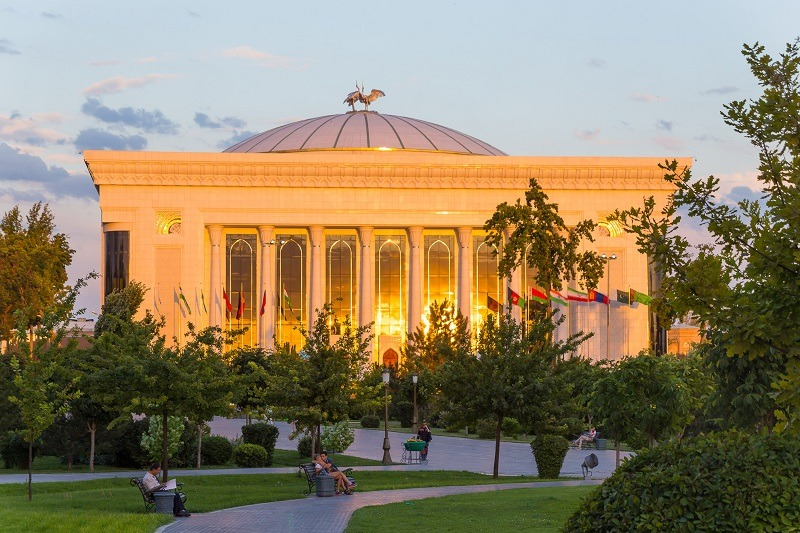


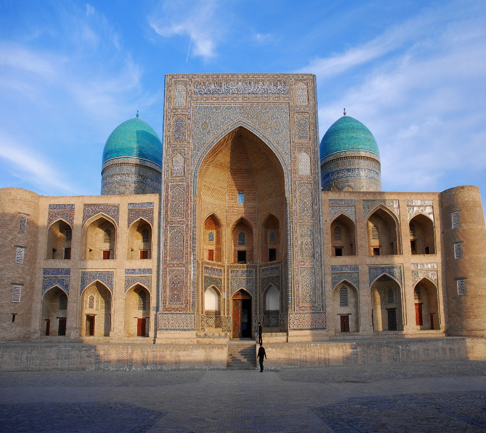
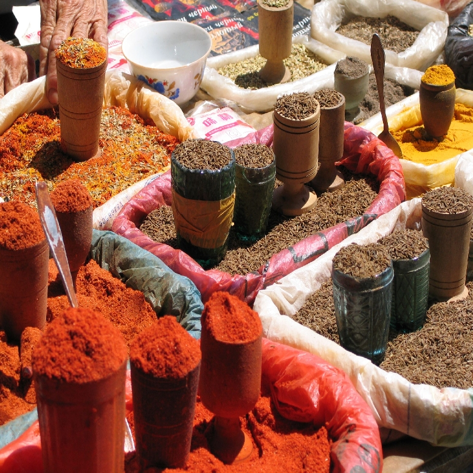
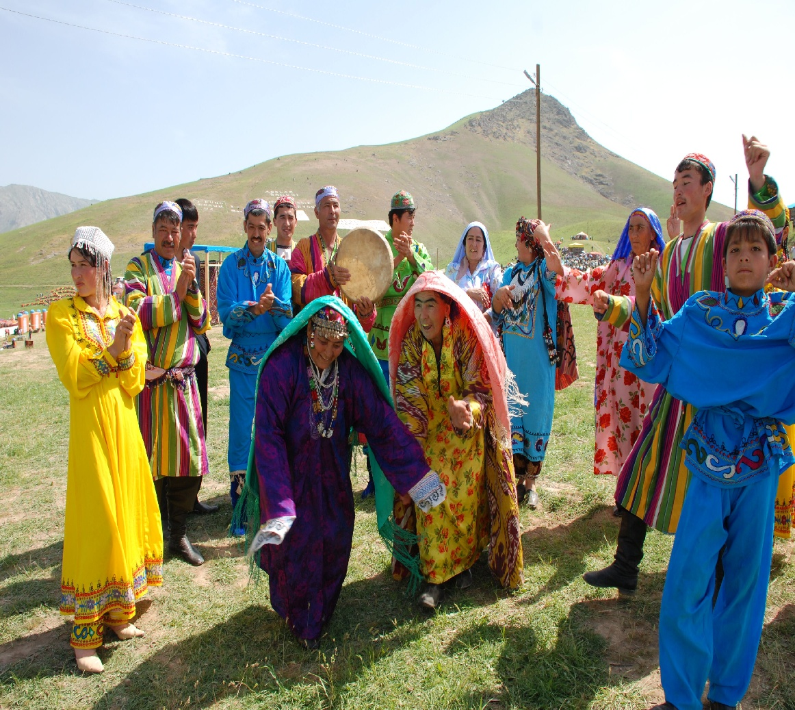
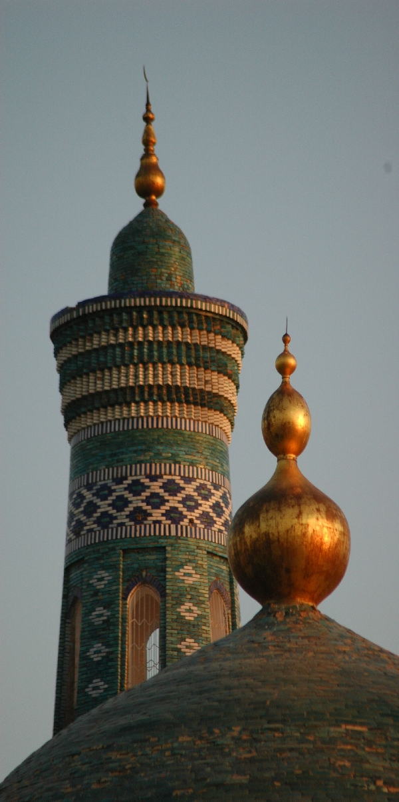
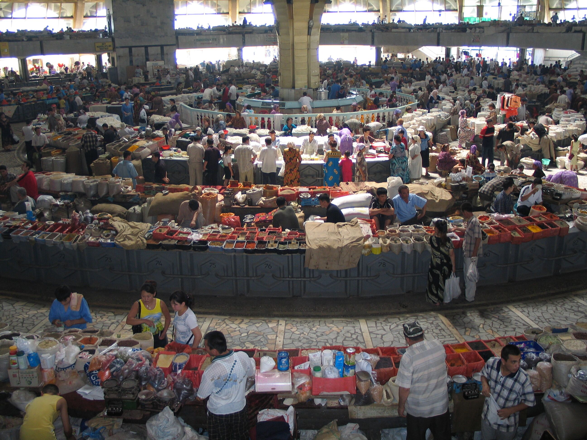
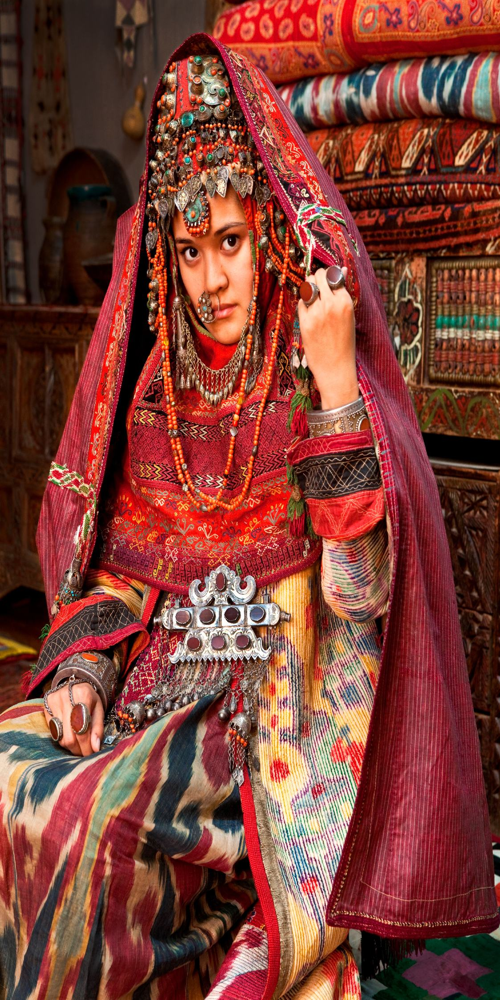
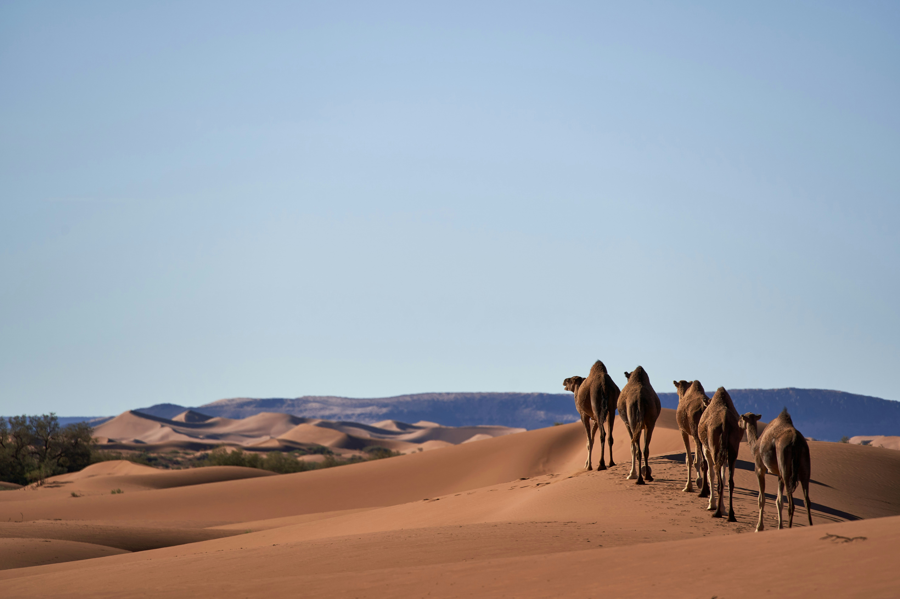
Amirsoy · Seilbahn optional · Berglandschaften · Charvak-Stausee
Nach dem Fruehstueck Fahrt nach Amirsoy mit beeindruckenden Ausblicken. Wer moechte, faehrt mit der Seilbahn bis zum Gipfel. Danach geht es weiter durch Tschimgan mit frischer Bergluft und wechselnden Landschaften. Fotostopp am Charvak-Stausee und Besuch der alten Platanen sowie praeistorischer Petroglyphen. Am Abend Rueckfahrt nach Taschkent.
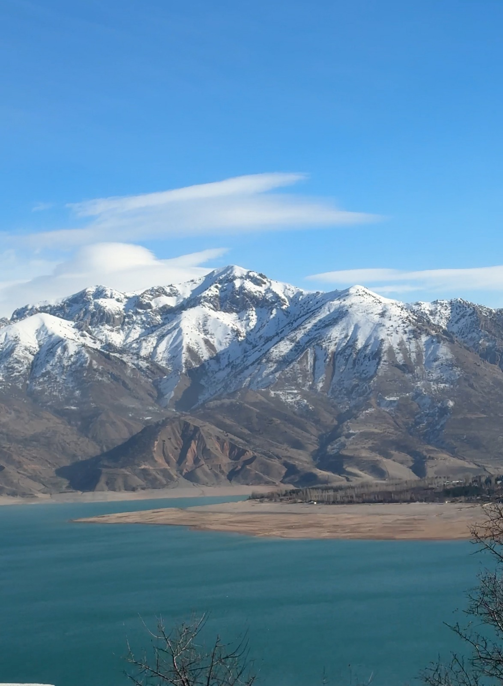
Schlellzug nach Buchara · Labi Hauz · Magoki Attori Moschee · Altstadt
Frueher Transfer zum Bahnhof und Fahrt mit dem Schnellzug nach Buchara. Nach dem Empfang entdecken Sie das historische Ensemble Labi Hauz und die Magoki Attori Moschee. Ein Hoehepunkt ist die Ulugbek Medrese. Am Nachmittag bleibt Zeit, durch die Altstadt zu schlendern. Am Abend geniessen Sie ein traditionelles Abendessen im Restaurant.
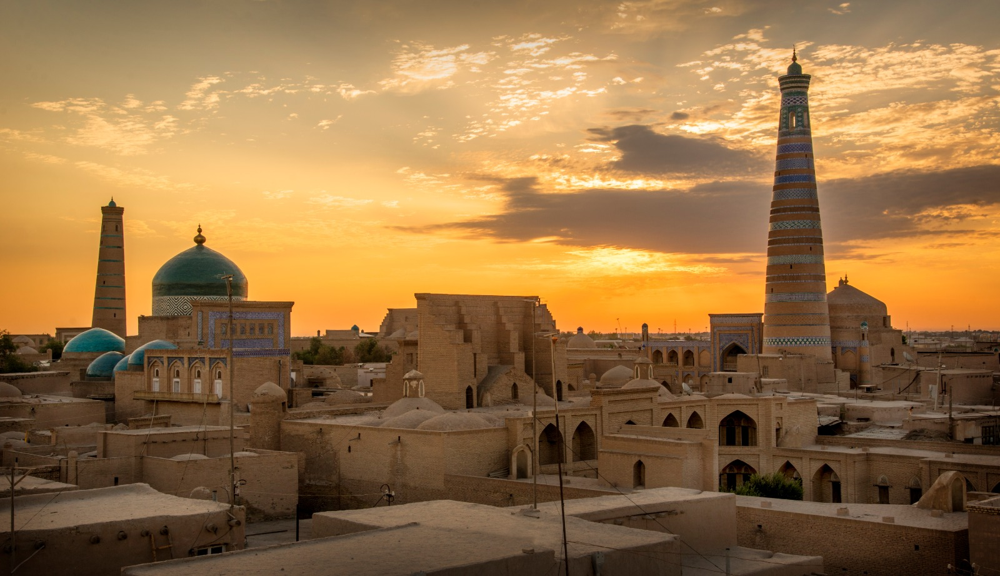
Historische Schätze · Ark · Folklore-Show · Plov-Kochkurs
Tag 5 steht im Zeichen der grossen Sehenswuerdigkeiten: Zitadelle Ark, Bolo-Hauz-Moschee und der Poi-Kalyan-Komplex. Am Abend erleben Sie eine Folklore-Show in der Nodir Devan Begi Madrasa mit anschliessendem Abendessen. Tag 6 fuehrt zur Sommerresidenz Sitorai Mohi Hosa. Abends nehmen Sie an einem usbekischen Plov-Kochkurs teil.
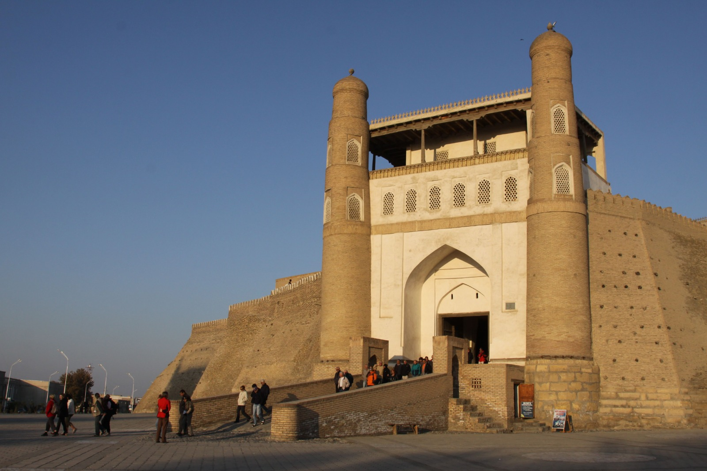
Roadtrip in die Wüste · Gijduvan · Jurtenlager · Lagerfeuer
Heute beginnt der Roadtrip in die Weiten der Kyzyl-Kum-Wueste. Unterwegs passieren Sie Gijduvan, bekannt fuer seine Toepfertradition. Nach der Ankunft im Jurtenlager bleibt Zeit zum Entspannen. Am Abend erwartet Sie ein besonderes Essen am offenen Feuer und ein Lagerfeuer mit kasachischem Akin.
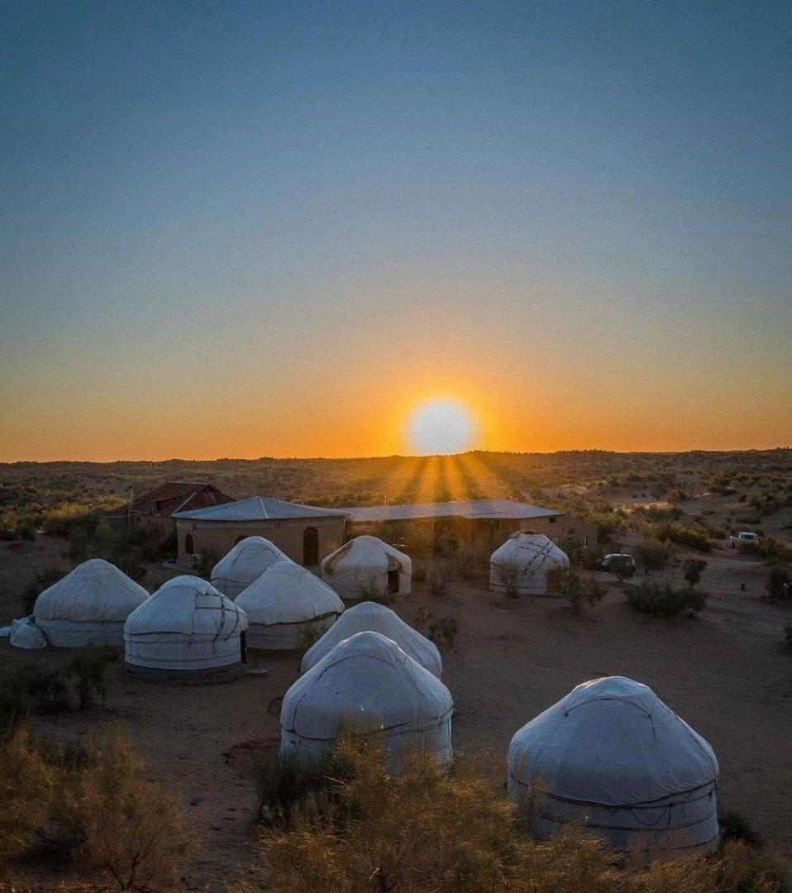
Nurata · Chashma-Quelle · Weiterfahrt nach Samarkand
Nach dem Fruehstueck geht es ueber Nurata Richtung Samarkand. Am Fuss der Festung besuchen Sie die heilige Quelle Chashma, beruehmt fuer ihre Forellen, sowie eine Moschee aus dem 16. und ein Mausoleum aus dem 9. Jahrhundert. Ankunft in Samarkand mit freier Zeit fuer das Mittagessen. Am Abend Abendessen im lokalen Restaurant.
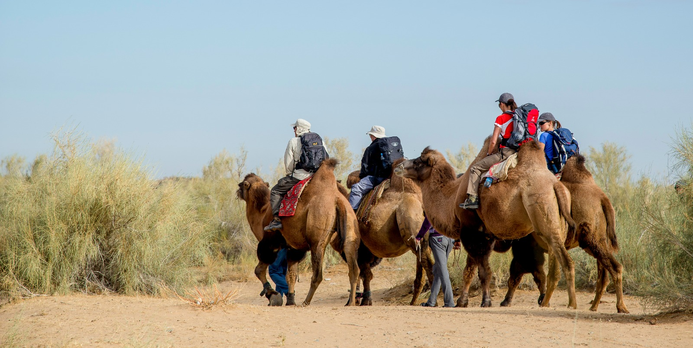
Registan-Platz · Gur Emir · Schahi Sinda · Kulturwunder
Heute entdecken Sie die Wunder der Seidenstrasse: den Registan-Platz mit seinen monumentalen Medresen, Gur Emir, das Mausoleum Timurs, sowie Schahi Sinda und das Mausoleum des Propheten Daniel. Am Abend geniessen Sie ein Abendessen im lokalen Restaurant.
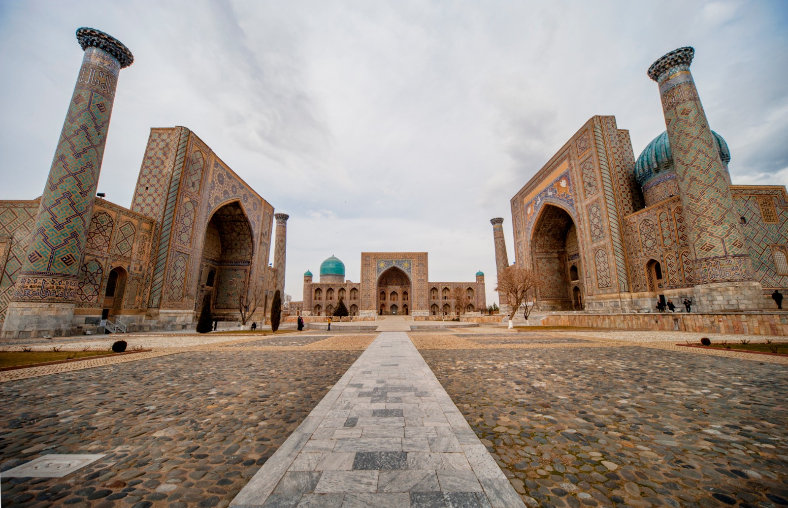
Papiermanufaktur · Teppichwerkstatt · Basar · Manti-Kochkurs
Sie besuchen eine traditionelle Papiermanufaktur und eine Teppichwerkstatt, in der Teppiche von Hand geknuepft werden. Danach geht es zum Siyob Basar mit Gewuerzen, Fruechten und Souvenirs. Am Abend nehmen Sie an einem Manti-Kochkurs teil und erleben eine Kulturshow mit usbekischen Taenzen.
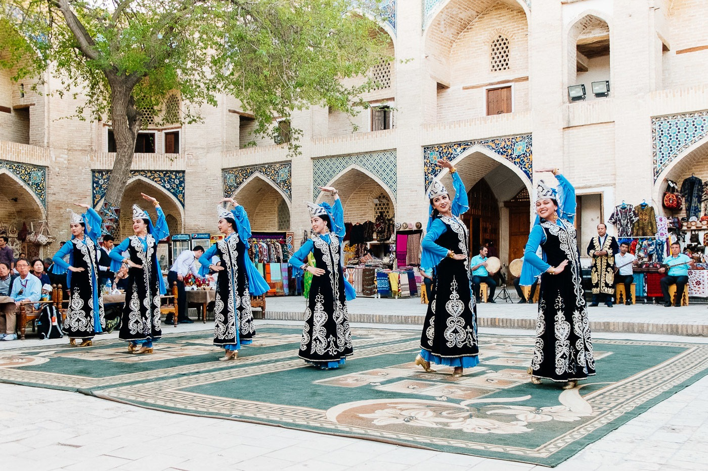
Früher Transfer · Rückreise · Ende der Reise
Frueher Transfer zum Flughafen Samarkand um 04:10 Uhr. Abflug um 06:10 Uhr nach Istanbul mit Weiterflug nach Berlin. Damit endet Ihr unvergesslicher Usbekistan-Aufenthalt.

Wählen Sie Ihren Wunschtermin für unsere exklusive Usbekistan-Rundreise.
Hier können Sie einen Reisetermin wählen:
Einzelzimmerzuschlag: 290 EUR pro Person. Internationale Fluege nicht im Preis enthalten.
Senden Sie uns Ihre Wunschdaten. Wir melden uns mit allen Details und Verfuegbarkeiten.
Ihre Anfrage ist eingegangen. Wir melden uns in Kuerze per E-Mail.
Bitte pruefen Sie Ihre Angaben und versuchen Sie es erneut.
Erfahren Sie mehr über unsere Touren, Unterkünfte, Reisebusse und wichtige Vorbereitungen.
Detaillierte Informationen zu unseren Touren, Leistungen und Reiseverläufen.
Authentische Hotels und Gästehäuser entlang der Seidenstraße.
Kleine Gruppen, komfortable Busse und renommierte Fluggesellschaften.
Visa, Gesundheit, Versicherungen und praktische Tipps für Ihre Reise.
Wichtige Hinweise zu Buchung, Teilnehmerzahl und Reiseorganisation.
Schreiben Sie uns eine Nachicht über unser Formular, E-Mail oder hinterlassen Sie Ihre Nummer für einen persönlichen Rückruf.